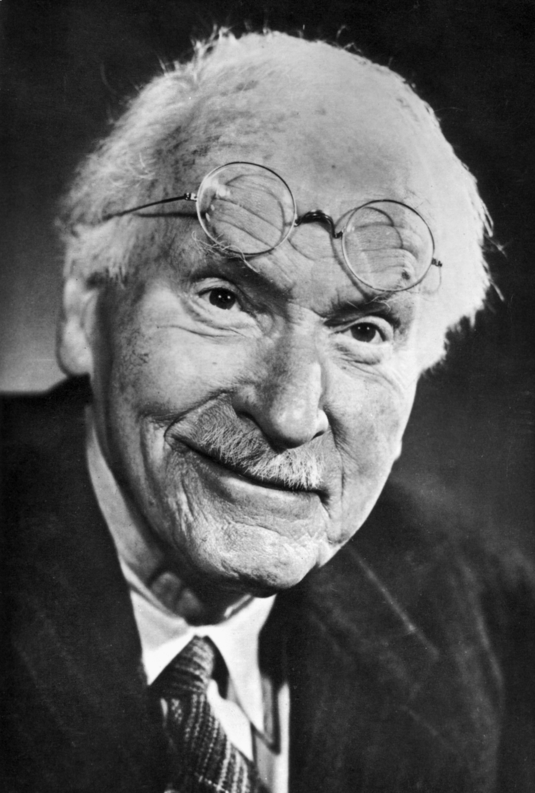

Carl Gustav Jung
Carl Gustav Jung
CGJung.jpg Carl Gustav Jung c. 1915.
Información personal
Nacimiento 26 de julio de 1875
Bandera de Suiza Kesswil, Cantón de Turgovia, Suiza
Fallecimiento 6 de junio de 1961 (85 años)
Küsnacht, Cantón de Zúrich, Suiza
Causa de la muerte Enfermedad Ver y modificar los datos en Wikidata
Lugar de sepultura Küsnacht Ver y modificar los datos en Wikidata
Residencia Suiza
Nacionalidad Suiza
Familia
Cónyuge Emma Rauschenbach
Educación
Educado en
Universidad de Basilea Ver y modificar los datos en Wikidata
Supervisor doctoral Eugen Bleuler Ver y modificar los datos en Wikidata
Alumno de
Sigmund Freud
Pierre Janet (1902–1903) Ver y modificar los datos en Wikidata
Información profesional
Ocupación Psicoterapeuta, psicólogo, psiquiatra, filósofo, autobiógrafo, ensayista, psicoanalista, escritor de no ficción y mitógrafo Ver y modificar los datos en Wikidata
Área Psiquiatría, psicología, psicología analítica y psicoterapia Ver y modificar los datos en Wikidata
Conocido por Yo, complejo, arquetipo, inconsciente colectivo, libido, individuación, introversión, extraversión, psicología analítica, sincronicidad
Empleador
Universidad de Basilea
Universidad de Zúrich Ver y modificar los datos en Wikidata
Miembro de
Zofingia
Academia Alemana de las Ciencias Naturales Leopoldina
Círculo Eranos
C.G. Jung-Institut Zürich Ver y modificar los datos en Wikidata
Firma Carl Jung signature.svg
[editar datos en Wikidata]
Carl Gustav Jung (AFI: ˈkarl ˈgʊstaf ˈjʊŋ) (Kesswil, cantón de Turgovia, Suiza; 26 de julio de 1875–Küsnacht, cantón de Zúrich, id.; 6 de junio de 1961) fue un médico psiquiatra, psicólogo y ensayista suizo, figura clave en la etapa inicial del psicoanálisis; posteriormente, fundador de la escuela de psicología analítica, también llamada psicología de los complejos y psicología profunda.
Se le relaciona a menudo con Sigmund Freud, de quien fuera colaborador en sus comienzos. Jung fue un pionero de la psicología profunda y uno de los estudiosos de esta disciplina más ampliamente leídos en el siglo XX. Su abordaje teórico y clínico enfatizó la conexión funcional entre la estructura de la psique y la de sus productos, es decir, sus manifestaciones culturales. Esto le impulsó a incorporar en su metodología nociones procedentes de la antropología, la alquimia, la interpretación de los sueños, el arte, la mitología, la religión y la filosofía.
Jung no fue el primero en dedicarse al estudio de la actividad onírica. No obstante, sus contribuciones al análisis de los sueños fueron extensas y altamente influyentes. Escribió una prolífica obra. Aunque durante la mayor parte de su vida centró su trabajo en la formulación de teorías psicológicas y en la práctica clínica, también incursionó en otros campos de las humanidades, desde el estudio comparativo de las religiones, la filosofía y la sociología hasta la crítica del arte y la literatura.
Dan Winter
Dan Winter
Dan Winter
Born November 13, 1952
Residence Waynesville, NC, United States
Nationality USA
Known for Paramagnetism, Implosion, Sacred Geometry
Dan Winter's background spans a broad spectrum of disciplines. He graduated with honors at the Jesuit University of Detroit, he pursued graduate studies in psychophysiology, and the origins of languages. He has worked as a Systems Analyst with IBM, an industrial metallurgist and a crystallographer.
Dan lectures extensively around the world and recently toured Australia. It was during Dan's Sydney series of lectures that this interview was conducted. The object of the interview was to address Dan's applications of mathematical modelling to optimize spiritual development as a spin-off of his research on the relationship of emotion to wave length structure. One important tool developed by Dan is the Heart Tuner which measures or quantizes the onset of conscious self-awareness by virtue of the apparent geometry of the heart harmonics being geometrically linked by progressions based on powers of Phi (the Golden Mean 0.618033989...).
Biography
Jacobo Grinberg-Zylberbaum was born in Mexico City in 1946. Grinberg decided to study the human mind when he was 12 years old, after his mother died from a stroke.[2] He studied psychology at the Science Faculty of UNAM.[3] In 1970, he went to New York City to study psychophysiology at the Brain Research Institute. He earned a Ph.D. at the E. Roy John Laboratory.[3]
When he went back to Mexico, he founded a laboratory of psychophysiology at the Universidad Anáhuac. He installed another laboratory of this kind in UNAM in the late 1970s. He founded the Instituto Nacional para el Estudio de la Conciencia (INPEC) in 1987,[1] financed by UNAM and CONACYT. Jacobo published several of his books through INPEC.[3] Grinberg wrote more than 50 books about brain activity, witchcraft, shamanism, telepathy, and meditation.[1]
Jacobo tended to put his reputation as a scientist in danger when he tried to use the scientific method in shamanism studies.[4] He combined the two in his professional work, always trying to understand the “magic world.”[
Carl Edward Sagan
Carl Edward Sagan (Nueva York, Estados Unidos, 9 de noviembre de 1934-Seattle, Estados Unidos, 20 de diciembre de 1996) fue un astrónomo, astrofísico, cosmólogo, astrobiólogo, escritor y divulgador científico estadounidense. Fue un defensor del pensamiento escéptico científico y del método científico, pionero de la exobiología, promotor de la búsqueda de inteligencia extraterrestre a través del Proyecto SETI. Impulsó el envío de mensajes a bordo de sondas espaciales, destinados a informar a posibles civilizaciones extraterrestres acerca de la cultura humana. Mediante sus observaciones de la atmósfera de Venus, fue de los primeros científicos en estudiar el efecto invernadero a escala planetaria. En la Universidad Cornell, Carl Sagan fue el primer científico en ocupar la Cátedra David Duncan de Astronomía y Ciencias del Espacio, creada en 1976, y fue director del Laboratorio de Estudios Planetarios.
Carl Sagan ganó gran popularidad gracias a la galardonada serie documental de TV Cosmos: Un viaje personal, producida en 1980, de la que fue narrador y coautor. También publicó numerosos artículos científicos,1 y fue autor, coautor o editor de más de una veintena de libros de divulgación científica, siendo los más populares sus libros Cosmos, publicado como complemento de la serie, y Contacto, en el que se basa la película homónima de 1997. En 1978 ganó el Premio Pulitzer de Literatura General de No Ficción por su libro Los dragones del Edén.
A lo largo de su vida, Sagan recibió numerosos premios y condecoraciones por su labor como comunicador de la ciencia y la cultura. Hoy es considerado uno de los divulgadores de la ciencia más carismáticos e influyentes, gracias a su capacidad de transmitir las ideas científicas y los aspectos culturales al público no especializado con sencillez no exenta de rigor.